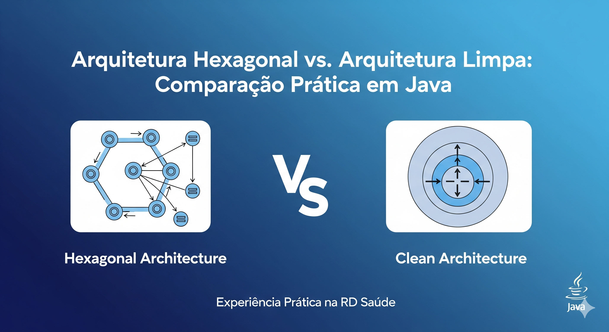

Arquitetura Hexagonal vs. Arquitetura Limpa: Comparação Prática em Java

Comparação entre Arquitetura Hexagonal e Arquitetura Limpa
Legenda: Imagem gerada por IA representando a comparação entre Arquitetura Hexagonal e Arquitetura Limpa, com elementos visuais de portas, adaptadores e camadas concêntricas.
Introdução: Uma Experiência Prática na RD Saúde
Há alguns anos, enquanto trabalhava como desenvolvedor Java sênior na RD Saúde, enfrentei um desafio comum em projetos de microserviços: como manter o código limpo, testável e independente de frameworks externos, especialmente em um ambiente onde as mudanças nos requisitos eram frequentes e a integração com sistemas legados era inevitável.
Naquele projeto, estávamos construindo um sistema de gestão de pacientes e agendamentos médicos, composto por vários microserviços. Inicialmente, adotamos uma abordagem mais tradicional com Spring Boot, mas logo percebemos os problemas: dependências acopladas, testes difíceis de isolar e dificuldades para trocar provedores de infraestrutura (como bancos de dados ou filas de mensagens) sem grandes refatorações.
Foi aí que introduzimos a Arquitetura Hexagonal, também conhecida como Ports and Adapters, combinada com o conceito de chassis (um framework interno que encapsula as tecnologias transversais). Esse chassis nos permitiu abstrair camadas como persistência, comunicação externa e logging, tornando os microserviços mais modulares e resilientes.
Mas, ao longo do tempo, comparamos essa abordagem com a Arquitetura Limpa (Clean Architecture) proposta por Robert C. Martin (Uncle Bob), que também enfatiza a separação de responsabilidades e a independência de frameworks. Neste artigo, vou compartilhar essa experiência prática, explicando as diferenças, vantagens e desvantagens de cada uma, com exemplos em Java.
O que é Arquitetura Hexagonal?
A Arquitetura Hexagonal, introduzida por Alistair Cockburn em 2005, trata o software como um núcleo central (o domínio) cercado por portas e adaptadores. O objetivo é isolar a lógica de negócio das preocupações externas, como bancos de dados, APIs ou interfaces de usuário.
Estrutura Básica:
- Domínio (Core): Contém as regras de negócio, entidades e casos de uso. É independente de qualquer tecnologia.
- Portas: Interfaces que definem contratos para entrada (ex.: comandos do usuário) e saída (ex.: acesso a dados).
- Adaptadores: Implementações concretas das portas, como controladores REST (adaptadores de entrada) ou repositórios JPA (adaptadores de saída).
No contexto de microserviços, isso facilita a troca de tecnologias sem afetar o núcleo. Por exemplo, podemos trocar de MySQL para PostgreSQL apenas alterando o adaptador de persistência.
Exemplo Prático em Java:
Vamos supor um serviço simples de agendamento médico. O domínio poderia ter uma entidade Appointment e um caso de uso ScheduleAppointmentUseCase.
// Domínio: Entidadepublic class Appointment { private Long id; private LocalDateTime dateTime; private String patientId; // getters, setters, business logic}// Domínio: Caso de Usopublic class ScheduleAppointmentUseCase { private final AppointmentRepositoryPort repository; public ScheduleAppointmentUseCase(AppointmentRepositoryPort repository) { this.repository = repository; } public void execute(ScheduleAppointmentCommand command) { // Lógica de negócio: validar disponibilidade, etc. Appointment appointment = new Appointment(/.../); repository.save(appointment); }}// Porta de Saídapublic interface AppointmentRepositoryPort { void save(Appointment appointment); List
No chassis da RD Saúde, encapsulamos essas portas e adaptadores em módulos separados, permitindo que equipes diferentes trabalhem em paralelo sem conflitos.
O que é Clean Architecture?
Proposta por Uncle Bob, a Clean Architecture é uma evolução da Arquitetura Hexagonal, com ênfase ainda maior na separação de camadas e na testabilidade. Ela organiza o código em círculos concêntricos, onde as camadas externas dependem das internas, mas não o contrário.
Estrutura Básica:
- Entidades: Regras de negócio independentes.
- Casos de Uso: Aplicação das regras em cenários específicos.
- Controladores/Apresentadores: Interface com o mundo externo.
- Frameworks/Drivers: Detalhes de implementação (bancos, web, etc.).
A diferença chave é a rigidez: a Clean Architecture proíbe dependências de camadas externas para internas, usando injeção de dependência e interfaces para garantir isso.
Exemplo Prático em Java:
Usando o mesmo exemplo, na Clean Architecture, o caso de uso ficaria na camada de aplicação, e as portas seriam interfaces na mesma camada.
// Camada de Aplicação: Caso de Usopublic class ScheduleAppointmentUseCase { private final AppointmentRepository repository; public ScheduleAppointmentUseCase(AppointmentRepository repository) { this.repository = repository; } public void execute(ScheduleAppointmentCommand command) { // Mesmo lógica }}// Interface na Camada de Aplicaçãopublic interface AppointmentRepository { void save(Appointment appointment);}// Camada de Infraestrutura: Implementação@Repositorypublic class JpaAppointmentRepository implements AppointmentRepository { // Implementação}
Comparação Prática: Hexagonal vs. Arquitetura Limpa
Apresento abaixo a comparação por aspecto, usando parágrafos rotulados para cada arquitetura — formato pensado para leitura contínua no DOCX.
Flexibilidade
Arquitetura Hexagonal — Alta para troca de adaptadores. O principal objetivo é isolar o domínio das dependências externas, o que facilita substituir tecnologias (por exemplo, trocar o banco de dados apenas alterando o adaptador de persistência).
Arquitetura Limpa — Rigor adicional para independência de camadas. Esse rigor reduz o risco de acoplamento reverso e dá garantias maiores quando mudanças arquiteturais forem necessárias.
Complexidade
Arquitetura Hexagonal — Menor curva inicial; adequada para equipes pequenas ou projetos que precisam de entregas rápidas, pois impõe menos camadas e menos burocracia de projeto.
Arquitetura Limpa — Mais camadas e disciplina. Recomendável para sistemas grandes e de longa manutenção, onde a estrutura adicional compensa o custo inicial.
Testabilidade
Arquitetura Hexagonal — Facilita testes de portas e adaptadores isoladamente, bom para testes unitários e integração de adaptadores específicos.
Arquitetura Limpa — Excelente para testar casos de uso sem infraestrutura, favorecendo testes de negócio puros e refatorações seguras.
Adaptação a Mudanças
Arquitetura Hexagonal — Muito eficiente para mudanças externas (nova API, novo provedor de mensageria), pois as integrações ficam encapsuladas em adaptadores.
Arquitetura Limpa — Melhor para mudanças internas, como refatorações de regras de negócio, em razão da separação rígida de responsabilidades entre camadas.
Experiência na RD Saúde
Arquitetura Hexagonal — Usamos para acelerar integrações com sistemas legados; provou-se prática, porém exigiu disciplina para não contaminar o núcleo com detalhes de infraestrutura.
Arquitetura Limpa — Aplicada em serviços posteriores; reduziu bugs de integração e aumentou a confiança em refatorações, embora tenha exigido maior tempo de configuração inicial.
Na prática, a Arquitetura Hexagonal foi perfeita para nosso chassis: criamos adaptadores genéricos para logging, métricas e segurança, reutilizáveis em todos os microserviços. A Arquitetura Limpa, por sua vez, trouxe mais segurança durante refatorações críticas, especialmente ao introduzir regras de compliance médico.
Conclusão
Ambas as arquiteturas promovem código sustentável, mas a escolha depende do contexto. Se você está começando um projeto e prioriza isolamento rápido, vá com Hexagonal. Para escalabilidade e manutenção a longo prazo, Clean Architecture é superior.
Na RD Saúde, essa combinação nos permitiu entregar microserviços robustos e escaláveis. E você? Já usou alguma dessas abordagens? Compartilhe nos comentários!
Christian MulatoDesenvolvedor Java Sênior14 de setembro de 2025